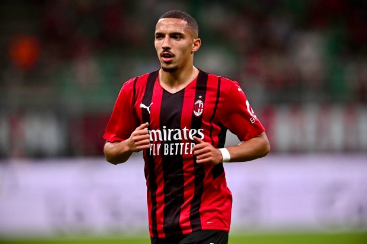

Bienvenue sur la page de Ismaël Bennacer

Valeur actuelle: 30,00 M d'€
Biographie
Ismail Bennacer, né à Arles le 1er décembre 1997, est un footballeur international algérien évoluant au poste de milieu défensif à l'AC Milan. En 2019, il a été l'un des principaux acteurs du triomphe de l'Algérie lors de la Coupe d'Afrique des Nations en Égypte dirigée par Djamel Belmadi. Il a été désigné meilleur joueur du match par la CAF.
Les débuts
Ismaël Bennacer est né à Arles, dans le sud de la France, d'un père marocain et d'une mère algérienne. Il se forme à Arles-Avignon. Le 3 janvier 2015, il inscrit son premier but en carrière en Coupe de France contre le Red Star (défaite 2-1) avec points, suivi d'une titularisation contre Orléans (1-1) mais sort à la mi-temps. Un temps, après avoir refusé de signer son premier contrat pro, il foule encore la pelouse du Parc des Sports d'Avignon en fin de saison. Le 30 juillet 2015, il rejoint les Gunners d'Arsenal en provenance de l'AC Arles-Avignon après avoir été suivi et analysé par le dépisteur français Gilles Grimandi. Il a signé un contrat de cinq ans avec Arsenal.
Carrière Internationale
Bien qu’il ait porté le maillot de l’équipe de France des moins de 18 ans et moins de 19 ans entre 2015 et 2016, Ismaël Bennacer pouvait aussi jouer pour l'Algérie . Approché par ces deux fédérations, il tranche en 2016, à 18 ans, en faveur des Verts, déclarant : « Il n'y a pas eu d'hésitation ça a été un choix du cœur et surtout un choix sportif », « Les Marocains m’ont proposé de jouer avec les Espoirs, l’Algérie m’a intégré avec les grands ».
Le 11 août 2016, il est convoqué pour la première fois en équipe d'Algérie par le sélectionneur national Milovan Rajevac, pour un match des éliminatoires de la CAN 2017 contre le Lesotho. Le 4 septembre 2016, il honore sa première sélection contre le Lesotho. Lors de ce match, il entre à la 84e minute de la rencontre, à la place de Hillal Soudani. Le match se solde par une large victoire 6-0 des Algériens. À la suite du forfait de Saphir Taïder, le 11 janvier 2017, il est rappelé par le sélectionneur78 mais, ne dispute aucune rencontre de la CAN 2017. L'Algérie est éliminée au premier tiur. Le 22 mars 2019, il délivre sa première passe décisive en sélection en faveur de son coéquipier Mehdi Abeid, face à la Gambie (1-1), dans le cadre des qualifications de la CAN 2019. Puis, le 30 mai, il fait partie des 23 appelés par le sélectionneur national Djamel Belmadi pour la CAN 2019.